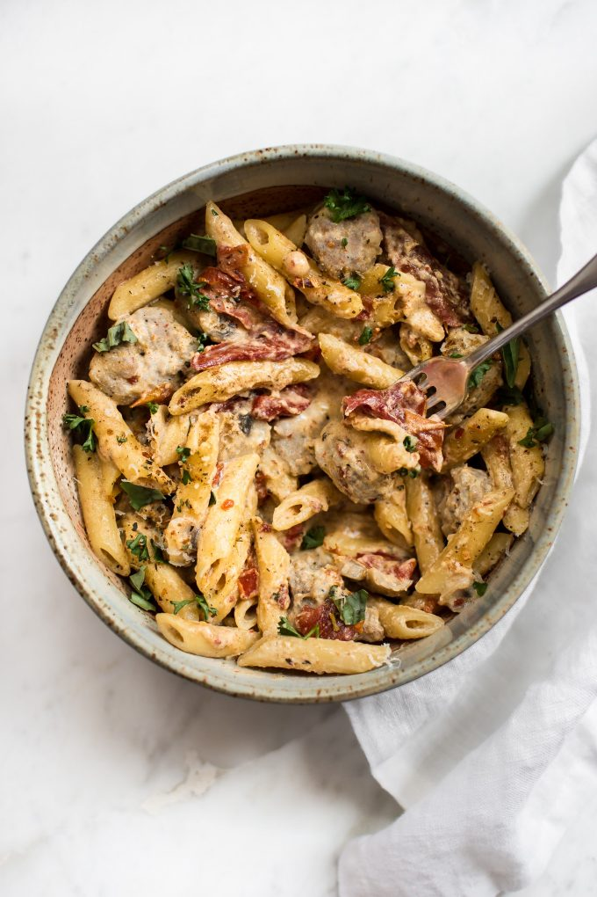

Cajun Sausage Pasta

Description
This easy one pot creamy Cajun sausage pasta recipe is flavorful comfort food at its best! Ready in just over half an hour. Perfect for a weeknight dinner.
Red pepper, sun-dried tomatoes, garlic, and a little Dijon mustard go a long way towards making the sauce especially scrumptious. Finish this Cajun pasta recipe off with some fresh basil and parmesan cheese.
Ingredients
- 1/2 tablespoon olive oil
- 1 pound pork sausage (ideally smoked)
- 5 ounces white mushrooms
- 4 cloves garlic minced
- 2 teaspoons Dijon mustard
- 1/4 cup sun-dried tomatoes
- 1/2 red bell pepper
- 2 cups chicken broth
- 2 cups half-and-half
- 1 tablespoon Cajun seasoning
- 3 cups uncooked penne
- 8 leaves fresh basil
- Salt & pepper
- Freshly grated parmesan cheese
Steps
- Add olive oil and sausage to a soup pot over medium-high heat. Brown the sausages for 5 minutes. If your sausages are particularly fatty, drain most of the grease off.
- Add the mushrooms and sauté for another 3 minutes or so.
- Stir in the garlic, Dijon mustard, sun-dried tomatoes, and red pepper. Cook for 2 minutes.
- Add in the chicken broth, half-and-half, Cajun seasoning, and penne. Increase the heat to high. Once it reaches a boil, turn the heat down to medium (or medium-low if it continues to bubble a lot). Cook until the pasta is done and the sauce is reduced to your liking (about 20 minutes), stirring often so the pasta doesn't stick to the bottom of the pan.
- Season with salt & pepper and stir in the basil. Top with freshly grated parmesan cheese if desired.